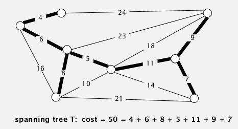
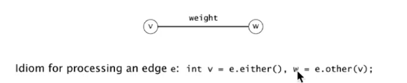
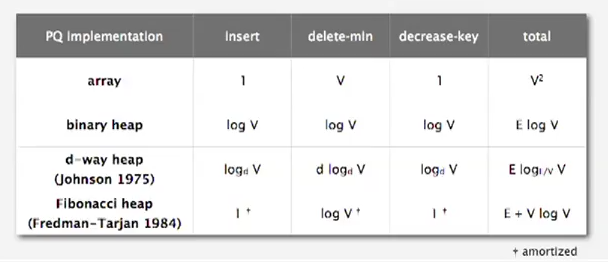

1. Introduction to MSTs
Given: undirected connecte graph G with positive edge weights.
def. Spanning tree T
is a subgraph of G, that is both tree (connected, acyclic) and spanning(all vertices are included).

⇒ Goal: find a spanning tree with minimum weight sum.
2. Greedy Algorithm
assumptions for simplification:
- edge weights are distinct
- graph is connected
→ MST uniquely exists.
cut property
def. a cut of a graph is a partition of its vertices into 2 non-empty sets.
def. a crossing-edge (wrt a cut) is an edge connecting vertex from one set to another.

prop. Given any cut, the crossing edges with minimum weight is in the MST.

proof.
Given a cut. {S1,S2} are the two set of vertices, let e be the min-weighted edge among all crossing-edges.
If e is not in the MST
→ exist another crossing-edge, f, in the MST (otherwise not connected)
→ adding e to the MST will create a cycle (tree property)
→ the edge f will be in this cycle
→ removing f and adding e will give us another spanning tree (!)
→ this new spanning tree has smaller weight sum ⇒ contradiction, CQFD.
Greedy MST algo
[algo ] Greedy MST
- initialize: all edges not selected (colored gray)
- find any cut with all crossing-edge gray
- use this cut and select the min-weighted crossing edge (color the edge as black)
- repeat V-1 times.
prop. the greedy algorithm gets the MST.
pf.
- any selected (black) edges are in the MST (according to the cut property)
- If we haven't selected V-1 edges → there is always a cut with all crossing-edges gray. (证明algo不会卡死)
(if edge weight not distinct, the proof fails, but can be fixed)
efficient implementations:
- how to choose the cut each time?
- how to find min-weighted crossing-edge?
⇒ Kruskal & Prim
3. Edge-Weighted Graph API
Edge API
→ Edge abstraction: make Edge comparable.
public class Edge implements Comparable<Edge>{
Edge(int v, int w, double weight);
int either();// get one of the endpoint of edge (as we are in undirected graph contex here)
int other(int v);// get the other endpoint
int compareTo(Edge that);// compare by edge weight
double weight();
}

Edge-weighted Graph API
adj-list implementation: Bag<Edge>[] adj;(for undirected graph, each edge appears twice in adj)
public class EdgeWeightedGraph{
private final int V;
private final Bag<Edge>[] adj;
EdgeWeightedGraph(int V){
this.V = V;
this.adj = (Bag<Edge>)new Bag[V];
for(int v=0;v<V;v++) adj[v] = new Bag<Edge>();
}
void addEdge(Edge e){// use the Edge class instead of directly v and w
int v = e.either(), w = e.other();
adj[v].add(e);
adj[w].add(e);
}
Iterable<Edge> adj(int v){//get Edges incident to v
return adj[v];
}
Iterable<Edge> edges();// get all Edges
}
(allow self-loops and parallel edges)
MST API
public class MST{
MST(EdgeWeightedGraph G);//compute the MST
Iterable<Edge> edges();// selected edges in the MST
double weight();// sum of all edge weights in MST
}
4. Kruskal's Algorithm
[algo]
- consider edges in ascending order of weight,
- add the edge to MST unless it creates a cycle.
In the running of Kruskal: we have several small connect components and they merge with each other until we get MST.
correctness
prop. Kruskal's algo works.
pf
(idea: proove that Kruskal is a special case of the greedy algorithm, ie. how to select the specific cut)
suppose Kruskal's algo selects(colored black) an edge e=v-w
→ select a cut = vertices connected to v in the (constructing) MST; and the rest vertices.
→ for this cut, there is no black crossing edges
→ moreover among all crossing edges of the cut the edge e has the smallest weight!! (by def of Kruskal) CQFD
implementation
- how to test if adding an edge will create a cycle ?
DFS from v to w? → O(V)
⇒ Union-Find ! O(lg*V) ☺ (almost constant time)
if find(v)==find(w), then we know adding e will create a cycle.
- considering edges in order? → use a prority queue.
public class KruskalMST extends MST{ private Bag<Edge> mst = new Bag<Edge>(); public KruskalMST(EdgeWeightedGraph G){ MinPQ<Edge> pq = new MinPQ<Edge>(); // build pq --> can be optimized to O(n) if build bottom-up for(Edge e: G.edges()) pq.insert(e); UF uf = new UF(G.V());// build a UF of V elements while(!pq.isEmpty() && mst.size()<G.V()-1){ Edge e = pq.delMin(); int v = e.either(),w=e.other(v); if( uf.connecte(v,w) ) continue; uf.union(v,w); this.mst.add(e); } } public Iterable<Edge> edges(){ return this.mst; } }
complexity
running time: O(ElogE)

5. Prim's Algorithm
since 1930...
Idea: start from a vertex and grows the tree T to MST.
[algo]
- Add to the tree T the edge that have exactely one endpoint in T and with minimum weight,
- repeat V-1 times.
In the running of Prim: there is always ONE connnected component .
Correctness
prop. Prim's algo works.
pf.
suppose edge e is the min-weighted edge connect a vertex in T with a vertex out of T.
→ select the cut = vertices in the tree T; vertices out of T
→ by def, there is no black crossing edge
→ e is the min-weighed edge by def of Prim. CQFD
implementation
challenge: how to find such an edge (connect T and other vertex, with min weight) ?
⇒ priority queue
"lazy" implementation
[algo]
- Maintain a PQ of edges that connect T and the rest vertices.
e = pq.delMin(), e = v-w, ifvandware both in T (as edges in pq might become obsolete as T grows) ⇒ just disregard it- to maintain the pq: add all incident edges(with other endpoint not in T) of the newly added vertex to pq
public class LazyPrimMST{
private Bag<Edge> mst;
LazyPrimMST(EdgeWeightedGraph G){
boolean[] marked = new boolean[G.V()]; // vertices in T
MinPQ<Edge> pq = new MinPQ<Edge>();
this.mst = new Bag<Edge>();
marked[0] = 0; // add vertex 0 to T
for(Edge e:G.adj(0))
pq.insert(e);// add edges to pq
while(!pq.isEmpty() && this.mst.size()<G.V()-1){
e = pq.delMin();
int v = e.either(), w = e.other(v);
if(marked[v] && marked[w]) continue;//ignore obsolete edges
v = marked[v] ? w : v;// v is the newly added vertex
marked[v] = true;
for(Edge e:G.adj(v)){
if(!marked[e.other(v)])
pq.insert(e);
}
}
}
}
Running time: O(ElgE)

space: O(E) in worst time.
"eager" implementation
Idea:
use a PQ of vertices, priority of vertex v := min-weight of edge that connects v to T.
[algo]
- Get from pq the vertex
vthat is closest to T, add it to T.
Update pq -- considerv's incident edgee=v-w:
- if w in T → ignore
- else:
- if w in pq → add w to pq
- else → if
v-whas smaller weight than the current priority, updatew's priority.- repeat till get V-1 edges.

key implementation component: a MinPQ that supports priority(key) update.
class IndexMinPQ<Key extends Comparable<Key>>{ IndexMinPQ(int N);// indices of elements: 0...N-1 void insert(int i, Key key); void decreaseKey(int i, Key key);// update the key(priority) of element-i int delMin(); int size(); }
implementation of such a PQ:
Use same code as standart PQ (maintain a heap[] array).
Elements are always accessed by "index", in range 0...N-1. maintain 3 parallel arrays:keys[], pq[], qp[]:
keys[i]: is the priority of element i (the element with index=i)pq[i]: is the index of the element in the heap position i (ie. in heap[i] is pq[i]th element )qp[i]: is heap position of element i ( ⇔ the ith element is in heap[qp[i]] )
to decreaseKey(i,key): change keys[i], then call siftup(qp[i])

summery of pq implementations:

6. MST Context
- unsolved pb: does a linear MST algo exists?
(recap: for UF, tarjan has prooved that linear algo doesn't exist — although Nlg*N is fast enough...)
@_@...

(这个Yao是清华那个Yao吧?)
- Euclidean MST
Given N points in plane, edge weight := Euclidean distance. (dense graph, E = V2)
→ exploit geomerty, O(NlgN)
- clustering
k-clustering (~ dist-fcn)
single-link clustering (def. dist of clusters = dist of 2 closest elements in each cluster)
→ Kruskal...

Comments !